Operating Documentation
Direction 5440001-3, Rev# 6
Signa HDxt Service Methods
Module Version 1.0, Version Date 5/3/07
Operating Documentation |
| Required Persons | Preliminary Reqs | Procedure | Finalization |
|---|---|---|---|
| 1 |
The RRF Chassis (see IIllustration 1 and Illustration 2) houses the circuit boards and power supplies for the subsystems. The boards and power supplies can be easily accessed from the front and back of the cabinet. This procedure consist of the following parts:
RRF CHASSIS CIRCUIT BOARDS, RRF CHASSIS CIRCUIT BOARDS
RRF POWER SUPPLY UNITS, RRF POWER SUPPLY UNITS
RRF COOLING FANS, RRF COOLING FANS
REMOVAL/INSTALLATION OF RRF CHASSIS, REMOVAL/INSTALLATION OF RRF CHASSIS
| NOTE: | The Lift Tool enables replacement of the RRF Chassis by one person. This is the preferred method of replacement to avoid personal injury. |
| NOTE: | Refer to proper Power Down Procedure. |
The following removal and insertion procedures are applicable for all of the types of circuit boards located within the cardrack.
POWER-DOWN:
Refer to the Power-Down procedure for the steps required to remove power from the Systems Cabinet.
Illustration 1: RRF Chassis - Front View

| Slot(s) Number | Board Name | Illustration |
|---|---|---|
| 4/5 | FPIO (Front Panel I/O) | Illustration 1 |
| 10 | RF-DIF (RF-Digital Interface) | Illustration 1 |
| +5V, 3.3V Digital Power Supply | Illustration 1 | |
| +15V, -15V RF Power Supply | Illustration 1 | |
| -5V, +5V, 3.3V RF Power Supply | Illustration 1 | |
| 6/7 | Exciter | Illustration 2 |
| 10/11 | Receiver | Illustration 2 |
| 12 | UTNS (Universal Transient Noise Suppressor) | Illustration 2 |
| 13/14 | MUX (Multiplexer) | Illustration 2 |
Illustration 2: RRF Chassis - Rear View
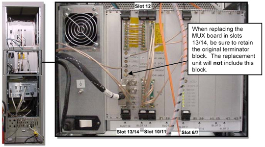
| NOTE: | Transfer the 50 ohm terminator (part # 2329754) from the old MUX Board to the new unit. Failing to transfer the terminator will mean a new one will need to be ordered. New MUX Boards don't ship with the terminator attached. |
RRF Chassis Circuit Board Removal/Replacement Procedure
Attach a grounding wrist strap.
Where applicable, remove the fiber-optic cables (J9, J10, Gigalink, etc.) from the face of the board.
| NOTE: | When removing the boards on the back of the chassis, you must also remove the coax cables connecting the MUX, UTNS, receiver and Exciter boards in order to remove the boards (see Illustration 3). These cables are very fragile and should only be pulled by the connectors to avoid damage. |
Loosen the two faceplate holding screws (one at the top and one at the bottom of the faceplate). These screws are captive to the faceplate and do not need to be completely removed.
Illustration 3: Removing Coaxial Cables

| NOTE: | It has been reported that a damaged EMI gasket on the RRF Chassis
(slot 14) can cause low SNR on multicoil channels. Early MUX boards have long
connector pins that protrude through the circuit board and can shred the gasket
as the board is being removed or installed. Manufacturing is now checking
the seating of the EMI gasket and trimming excess length from the connector
pins, but does not recommend trimming excess length from early-release MUX
boards in the field. Exercise care when removing the MUX board from early System Cabinets: loosen the mounting screws, eject it from slots 13/14 and then slide the board forward enough to permit access to the gasket. Confirm that the gasket is seated snugly against the left side of slot 14. Remove the board carefully to ensure that there is enough clearance so that the pins protruding through the board don’t damage the EMI gasket. |
Using your thumbs, push in the grey release tabs (Illustration 4), and gently push out the extractor tabs located on the top and bottom of the circuit board (refer to Illustration 5 for proper direction). The lever action of the ejectors will disengage the circuit board connections from the chassis.
Slide the circuit board all the way out of the card cage, being careful not to bend or bind the card in any way.
| NOTE: | The circuit board should be handled using only the faceplate, ejectors, and the edges of the board. |
Place the card in an appropriate shipping package, or discard it, if applicable.
Reverse The Process For Installation
Remove the packing material from the replacement board, and gently slide the circuit board into the chassis.
Illustration 4: Faceplate Release Tabs
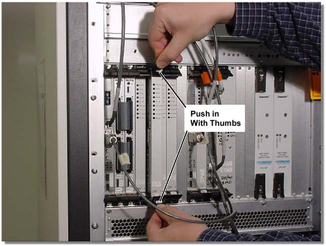
Gently engage the circuit board to the front of the RRF chassis. If it doesn’t feel like the circuit board is properly engaging the backplane, remove the board and check the connectors for bent or broken pins.
| NOTE: | Possible equipment damage! Extreme caution should be exercised when removing and replacing circuit boards. All boards (which have female connectors - See Illustration 6)) must be carefully disengaged, and then re-engaged to the male pins located on the backplane chassis. If any of the pins are damaged, the entire chassis will need to be replaced. Do not push on the front of the board. |
Using your thumbs, push the ejectors towards the center of the board and allow the lever action of the ejectors to insert the board into the chassis.
Tighten the faceplate holding screws to secure the circuit board to the cardrack.
| NOTE: | Do not over-tighten these screws. |
Where applicable, re-attach the fiber-optic cables to the face of the board.
Replace the cable harnesses. Each fits only one way.
Illustration 5: Faceplate Ejector Action
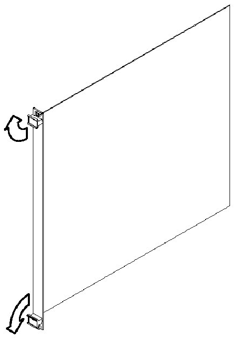
POWER-UP:
Refer to the Power-Up procedure for the steps required to restore power to the Systems Cabinet.
Test Procedure:
Run all RRF data path diags. Then run one head and one body scan to verify. If the system will not scan and errors cannot be cleared, remove the board and check for bent pins.
Illustration 6: Board Connections
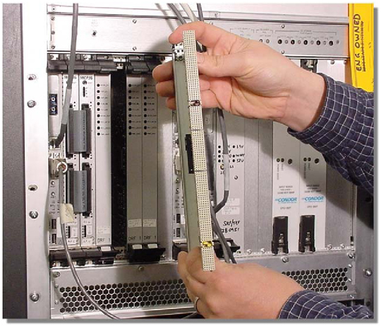
There are three RRF Power Supply units contained within the RRF Chassis which transform and transmit power to the cabinet’s components. All three units are clustered together on the front of the RRF Chassis, and the following removal and insertion procedure is applicable to all three units.
POWER-DOWN
Refer to the Power-Down procedure in Section 2 for the steps required to remove power from the Systems Cabinet.
RRF Power Supply Unit Removal/Replacement Procedure
Attach a grounding wrist strap
Remove the four holding screws (located at the corners of the power unit).
While firmly grasping the handle, gently pull the power supply unit out of the chassis.
Place the PSU in an appropriate shipping package.
Reverse The Process For Installation
Remove the packing material from the replacement power supply unit, and gently slide the PSU into the chassis.
Gently engage the power supply unit’s connectors with the backplane. If it doesn’t feel like the PSU is properly engaging the backplane, remove the board and check the connectors for bent or broken pins.
| NOTE: | Possible equipment damage! Extreme caution should be exercised when removing and replacing the power supply units. All PSUs (which have female connectors - see Illustration 6) must be carefully disengaged, and then re-engaged to the male pins located on the backplane chassis. If any of the pins are damaged, the entire chassis will need to be replaced. |
Using both hands, apply pressure evenly over the whole surface of the PSU and firmly push the PSU into the connectors, seating the PSU with the backplane.
Tighten the faceplate holding screws to secure the PSU to the cardrack.
| NOTE: | Do not over-tighten these screws. |
POWER-UP
Refer to the Power-Up procedure in Section 3 for the steps required to restore power to the Systems Cabinet.
Test Procedure
Run all RRF data path diags, then run one head and one body scan to verify.
Illustration 7: Power Supply Unit Connections
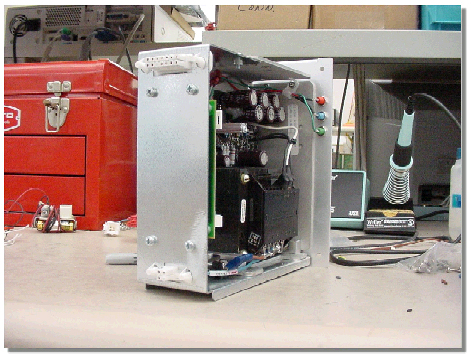
There are two cooling fans located on the RRF Chassis (one on the front, one on the back), and the removal process is the same for both.
POWER-DOWN
Refer to the Power-Down procedure in Section 2 for the steps required to remove power from the Systems Cabinet.
RRF Cooling Fan Removal/Replacement Procedure
Attach a grounding wrist strap.
Remove the four holding screws (located at the outside corners of the power unit). You do not need to remove the inner screws that secure the fan guard to the fan housing.
Gently remove the fan from the chassis.
Unclip the fan from the chassis (See Illustration 8).
Illustration 8: Cooling Fan Connections
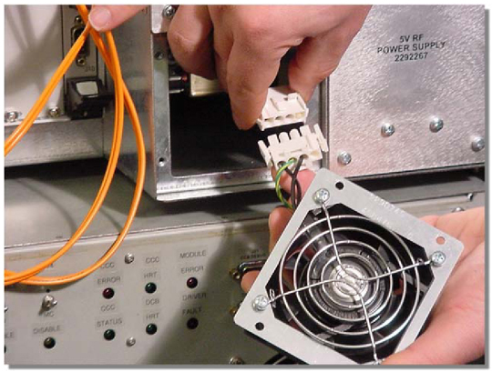
Place the fan in an appropriate shipping package or discard where appropriate.
Reverse The Process For Installation
Remove the packing material from the replacement fan, and clip the fan power supply to the fan.
Slide the fan into the assembly and install the four holding screws.
Tighten the holding screws to secure the cooling fan to the assembly.
| NOTE: | Do not over-tighten these screws. |
Power-Up
Refer to the Power-Up procedure in Section 3 for the steps required to restore power to the Systems Cabinet.
Test Procedure
Turn the cabinet power on and observe the fan to ensure that it is operating properly.
Power-Down
Refer to the Power-Down procedure in Section 2 for the steps required to remove power from the Systems Cabinet.
RRF Chassis Removal/Replacement Procedure
The weight of the empty RRF Chassis (39 lbs. or 15.9 kg) requires that a Lift Tool be used to remove it from the Systems Cabinet.
There are two Lift Tool Kits:
Fixed Site Lift Tool Kit (46-317266BOM6)
Mobile Lift Tool Kit (46-317266G2)
See Appendix A for a complete list of the contents of each kit.
Attach a grounding wrist strap.
Remove all boards from the RRF Chassis and store them in a static-safe location. See Section 6-2 for removal instructions.
Remove Power Supply Units from the RRF Chassis. See Section 6-3 for removal instructions.
Remove the upper front cover attachment bracket from the Systems Cabinet. See Illustration 10.
Assembly and Attachment of the Lift Tool Kit Procedure
| NOTE: | Steps 1-6 below are for fixed sites only. Mobile sites begin with step 7. |
Assemble the three-piece rail (Items 9, 10, and 11) with 4.75” x ½” cap screws (Item 15) and hex nuts (item 37) See Illustration 7-5. Tighten with a crescent wrench.
Assemble the rear bracket (Item 13) to the plate (Item 12) with two cap screws (Item 35).
Insert the plate (Item 12) into the rear rail section (Item 11) until flush, and tighten the cap screws (Item 35).
Place the assembly on top of the cabinet with the attached bracket to the rear of the cabinet. See Illustration 9.
Illustration 9: Hoist Assembly
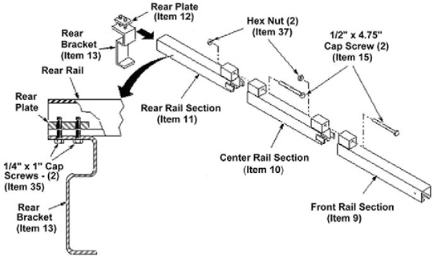
| ||||
| Possible personal injury or equipment damage! | ||||
| Throughout this entire procedure, please make sure to watch the lock pin once it is inserted in the front rail section. | ||||
| The motion of the chain may cause the pin to shift position slightly. |
Attach the other bracket (Item 13) to the plate (Item 12) with two cap screws (Item 35).
Illustration 10: Attaching Assembly To Cabinet
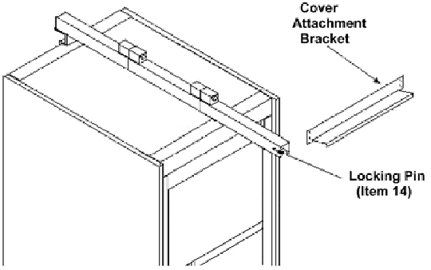
Insert the plate (Item 12) into the front rail section (Item 9). Push the bracket against the cabinet front, and tighten the cap screws. See Illustration 11.
Illustration 11: Attaching Front Bracket To Cabinet
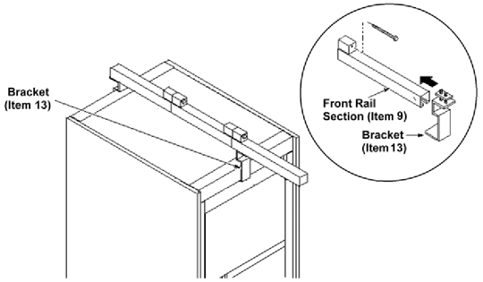
Insert the Hoist Assembly pivot bearings with the handle at left, into the front rail section for a fixed site (see Illustration 12) or the ceiling channel for a mobile site (Illustration 13).
Illustration 12: Attaching Hoist To Cabinet (Fixed Site)
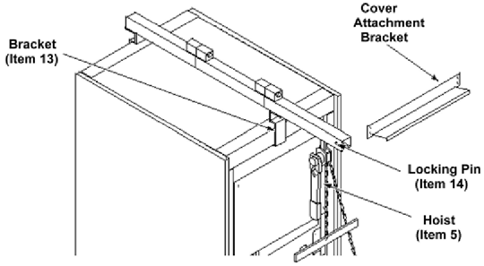
Illustration 13: Attaching Hoist To Cabinet (Mobile Site)
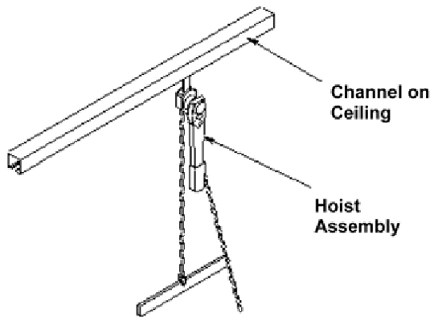
| ||||
| Possible personal injury or equipment damage! | ||||
| Throughout this entire procedure, please make sure to watch the lock pin once it is inserted in the front rail section. | ||||
| The motion of the chain may cause the pin to shift position slightly. |
Insert the lock pin (Item 14) through the holes in the front rail section. (See Illustration 12).
Remove the four screws located on the front of the cabinet frame that hold the RRF Chassis to the cabinet.
Illustration 14: Detaching The RRF Chassis From The Systems Cabinet Frame
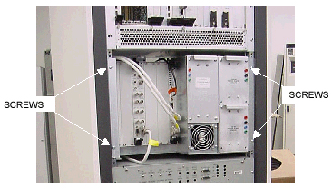
Slide the RRF Chassis toward you until it’s slightly less than halfway out of the Systems Cabinet. See Illustration 15.
Illustration 15: Attaching The Left Bracket To The Chassis And Spreader Bar
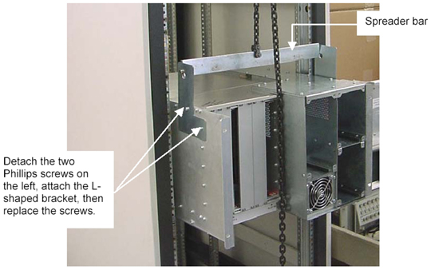
Remove the two Phillips screws from the left side of the Chassis in preparation for mounting the L-shaped bracket to the Chassis and the spreader bar. See Illustration 15 for the location of the bracket and screws.
Guide the shoulder bolt on the spreader bar into the top of the keyhole on the L-bracket.
Remove the two Phillips screws from the right side of the Chassis. Attach the straight bracket to the side-by-side holes on the right side of the Chassis. Once the bracket is attached, guide the right shoulder bolt on the spreader bar into the top of the keyhole.
| ||||
| Possible personal injury or equipment damage! | ||||
| Before putting weight on the hoist chain, be sure that the links are aligned properly (see Illustration 7-10). | ||||
| This will help keep the chain from binding up, or becoming kinked, which is nearly impossible to correct when the chain is under tension. |
With one hand, pull the back of the Chassis toward you as you gently pull the chain hoist outward with the other hand. When the module clears the cabinet, it will swing freely on the hoist.
Move the end of the chain with the ring on it to one side, if necessary, to keep it out of your way. Rotate the Chassis 90 degrees, being careful to avoid contact with any protruding power or toggle switches in the Systems Cabinet. See Illustration 16.
Illustration 16: Avoiding Contact With Switches On The Systems Cabinet
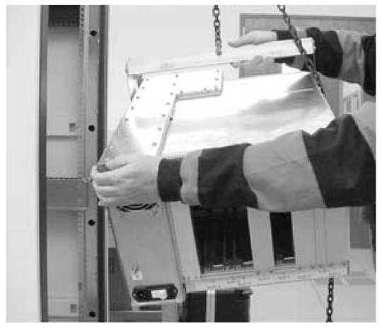
Use the hoist to slowly lower the RRF Chassis to the ground. Remove the two side brackets and the spreader bar.
Reverse The Process For Installation
Attach a grounding wrist strap.
Install the four screws that hold the RRF Chassis to the cabinet frame.
| NOTE: | Do not over-tighten these screws. |
Install all boards into the new RRF Chassis. See RRF CHASSIS CIRCUIT BOARDS, Step 2.d for installation instructions.
Replace the Power Supply Units. See RRF POWER SUPPLY UNITS, Step 2 for installation instructions.
Remove and disassemble the hoist, and repack it in the case.
Refer to the Power-Up procedure for the steps required to restore power to the Systems Cabinet.
If MNS Option is present and the MUX boards in slots 13/14 are replaced or if Exciter boards in slots 8/9 are replaced, perform MNS RF output Calibration.
If MUX UTNS or Receiver Boards are replaced, run Bandpass Asymmetry Correction Tool (BAT).